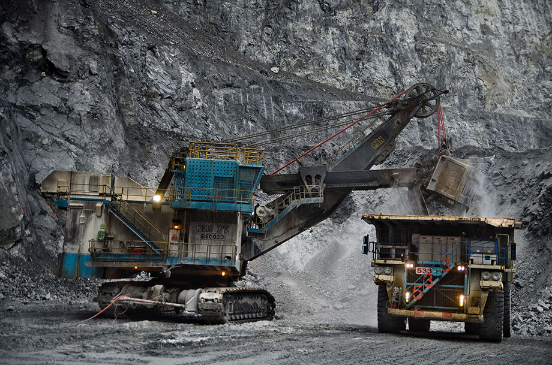
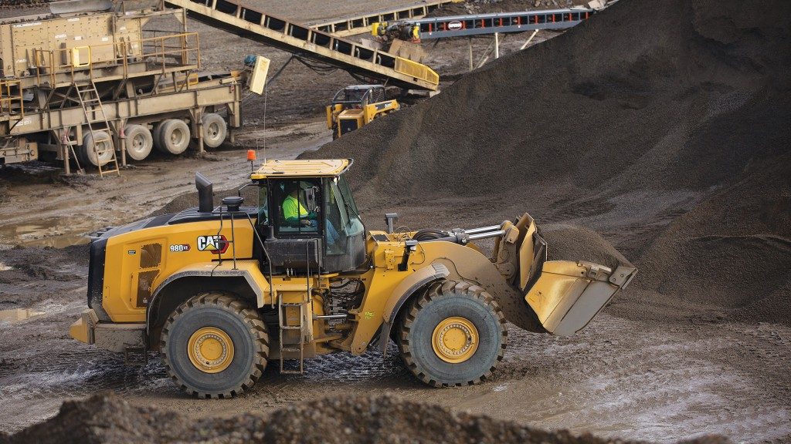
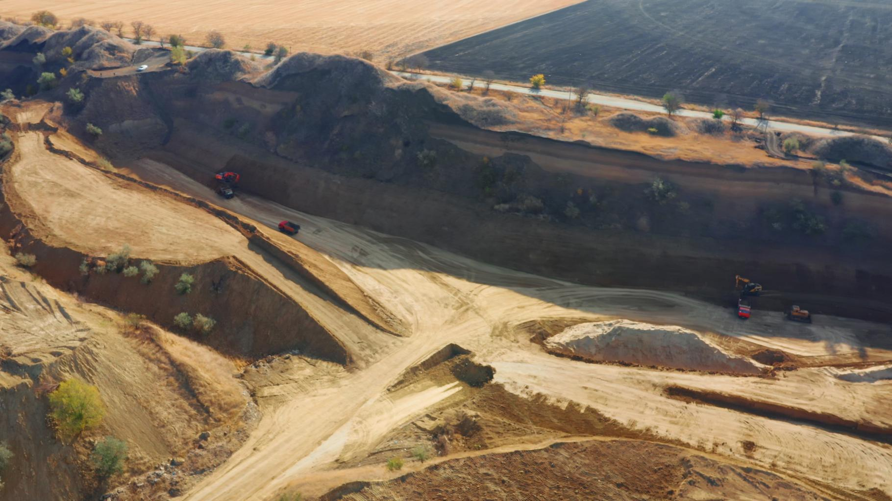

Mining Operations




Industrial mineral supplier from Indonesia supporting construction, smelter and manufacturing industries.
PT Mitra Nayla Jaya is a mineral supplier focusing on silica sand, split stone and asphalt materials for domestic and international markets. We work with trusted mining partners and logistics networks to ensure stable supply and competitive pricing for our buyers.
Mining Partners
Tons Supply Capacity
Export Destinations
Our mining partners and supply network are located in several regions of Indonesia.



Our supply partners operate with quality control procedures to ensure consistent mineral specifications suitable for industrial buyers.
Reliable silica sand supplier with stable quality.
Industrial Buyer – VietnamGood communication and flexible shipment.
Construction Company – Indonesia